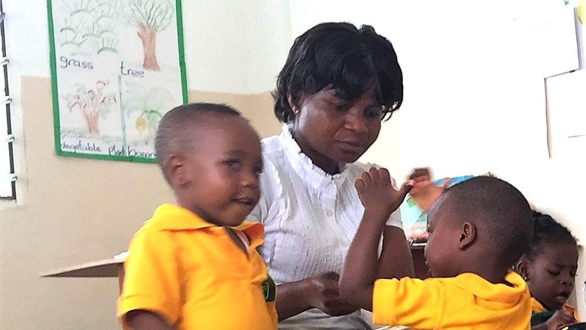
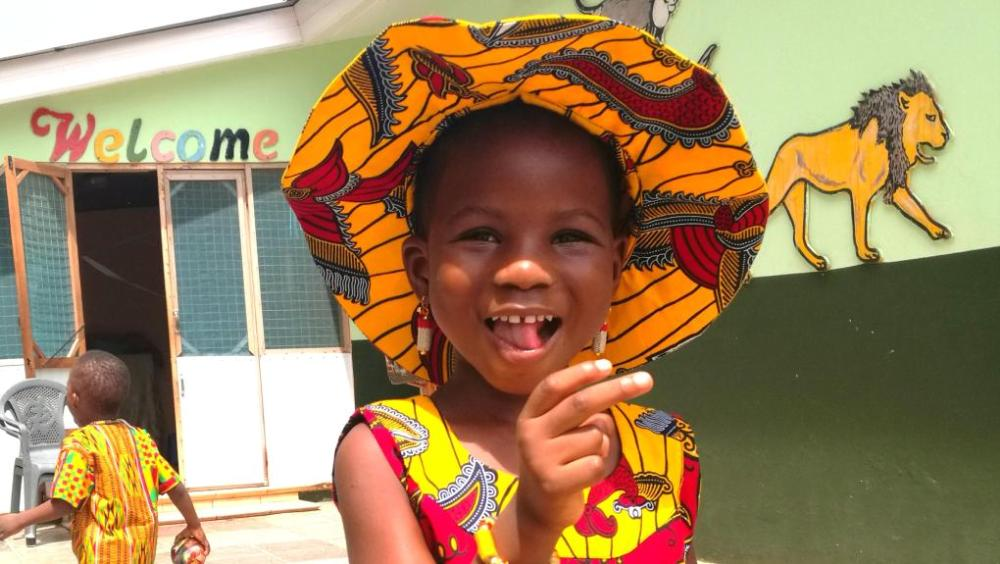
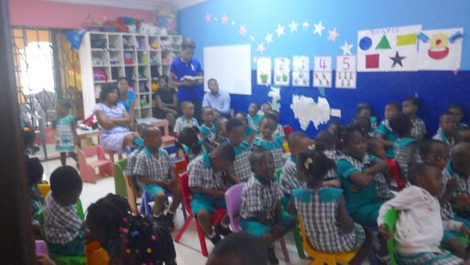
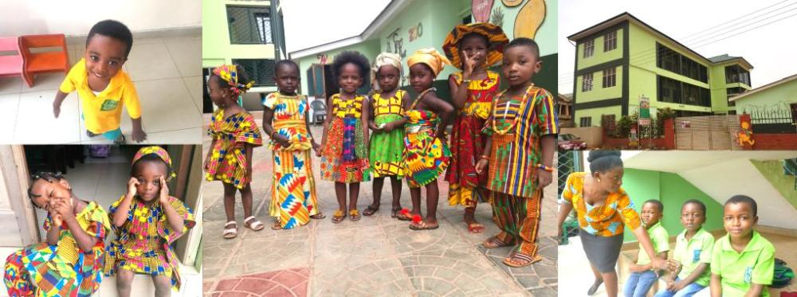

Our School
Our School
Springland International School is a school with the ability and desire to instil in students high moral values. We use practically Montessori brand in Teaching and Learning. SIS, can boast of modern facilities and aids in teaching and learning as we pride ourselves in coming out with the best. This great school is located at Klagon, NDC bus top on the Lashibi - Ashiaman road.
As an international school, we adopt the British Curriculum which is internationally recognised and also practised in most countries in the world. We also fine tune our academics with the Ghana Education Service [GES] Curriculum to meet Ghanaian standards too.
The school was founded by a noble woman of good virtue who believes in nurturing the future generation with all the values and skills needed to the world a better and safer place for all. Mrs. Charity Kudalor commenced the school with a few committed individuals who also share in her dream.
The saying "humbles beginning to greater achievement" was at play when the school begun in the hall of the founder Mrs. Charity Kudalor with three (3) childen, the youngest being 6 months old. With the promotion of the students and increase of new wards over the years, the school expanded with the building of a modern Storey complex furnished with a Computer lab and Library and a space for meetings and other school ceremonies.
In the interim the school partnered with sister schools and reports reaching us also boasted of the excellent performance of our wards in their new environment. The school’s good reputation continues to grow as we strive for the same goals and standards that led to its establishment.
The number of our qualified and experienced staff has increased. Staffs are tasked to take critical care of the pupils. The school uniforms from the Crèche through to the Primary School have been standardized for the wards to look unique and elegant so that they can be confident amongst other pupils.
The healthy meals for our wards have been maintained and we dish out meals in the measure to satisfy each ward. We have in place play grounds to round up the physique of wards as they work out basically to accumulate energy during their play with the various play items.
The school has held several annual celebrations; most importantly, a graduation for spiritually, morally, socially and intellectually balanced wards. It has not always been a smooth sail but we believe with our stakeholders, partners and prayers,` we would eventually achieve the goals of the school.
SIS, is endowed with massive infrasture ranging from conduisive class rooms, adequate wash rooms, computer laboratory, administartion block, etc coupled with facilities to meet modern trend of school system. We have the school shuttle to commute students and staff to and fro the school on real time basis so as to achieve the time bound activities of the day and also relieve parents and pupils off the stress.
As said earlier, the goal for the establishment was to carefully and skilfully mould children to be leaders who would satisfy the needs of the future and this desire greatly influenced the school's vision.
Our Vision
To be a school that will nurture and train children to be responsible and impeccable leaders of tomorrow, with the passion to love and serve their country in the fear of God.
Our Mission
To deliver world class education, established on sound moral and Christian values at a competitive and affordable price that will help to harness the potentials of the child towards competence and excellence; first to our community, the nation and the world at large.
Our Objectives
Our objectives are to explore every opportunity available for the proper development and growth of the child and to effectively apply the Montessori Principles in nurturing the child’s natural interests and skills through individual play, group play and child-centred activities, so that the child is able to discover his or her full potential.
Our Core Values
Our Core Values
 diligence We will always give our best.
 excellence We desire to be the best among equals.
 the fear of God We place God first in all we do.
Our Shared future
Our Shared future

We envision a future where our wards would be the exemplary leaders of tomorrow. In the near future however, we hope to continue producing graduates of our Kindergarten system and our future batches of Primary, Junior High and Senior High Schools. In addition to these our wards would be equipped to participate in the BECE and WASSCE and other international exams such as IGCSE and IB Diploma exams.
We hope to collaborate with other schools both home and abroad so as to participate in exchange programmes and competitions both in the academic scope and extracellular activities. This would help produce better rounded individuals who have unearth their true potentials who would be of greater benefit and fit in society.
In light of this the school has plans to introduce state of the art electronic teaching methods and aids and erect new structures for the Junior High School and College levels at our new site. These structures would be managed by qualified staff and furnished with the requisite technology needed for our wards to be the best they can be.
As contribution to the community and society our school would remain a melting pot, as kids from all walks of life interact and share the views and opinions in a safe and secure environment that promotes unity among children, parents and families alike.